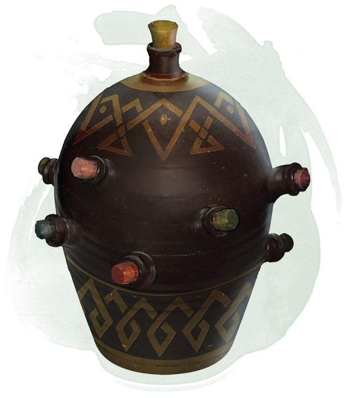

Alchemy Jug
Wondrous item, uncommon
This ceramic jug appears to be able to hold a gallon of liquid and weighs 12 pounds whether full or empty. Sloshing sounds can be heard from within the jug when it is shaken, even if the jug is empty.
You can use an action and name one liquid from the table below to cause the jug to produce the chosen liquid. Afterward, you can uncork the jug as an action and pour that liquid out, up to 2 gallons per minute. The maximum amount of liquid the jug can produce depends on the liquid you named.
Once the jug starts producing a liquid, it can't produce a different one, or more of one that has reached its maximum, until the next dawn.
You can use an action and name one liquid from the table below to cause the jug to produce the chosen liquid. Afterward, you can uncork the jug as an action and pour that liquid out, up to 2 gallons per minute. The maximum amount of liquid the jug can produce depends on the liquid you named.
Once the jug starts producing a liquid, it can't produce a different one, or more of one that has reached its maximum, until the next dawn.
| Liquid | Max Amount |
|---|---|
| Acid | 8 ounces |
| Basic poison | 1/2 ounce |
| Beer | 4 gallons |
| Honey | 1 gallon |
| Mayonnaise | 2 gallons |
| Oil | 1 quart |
| Vinegar | 2 gallons |
| Water, fresh | 8 gallons |
| Water, salt | 12 gallons |
| Wine | 1 gallon |
Dungeon Master´s Guide (BR)
